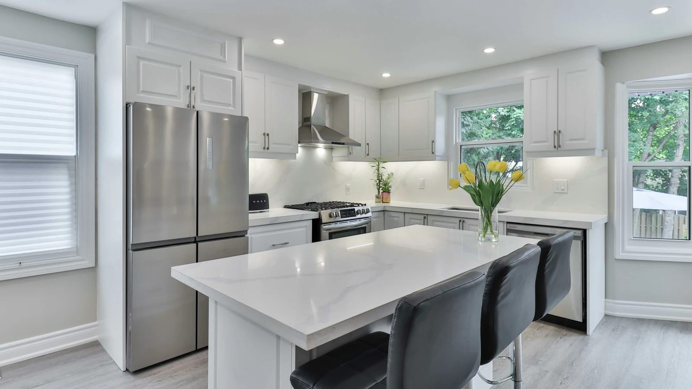
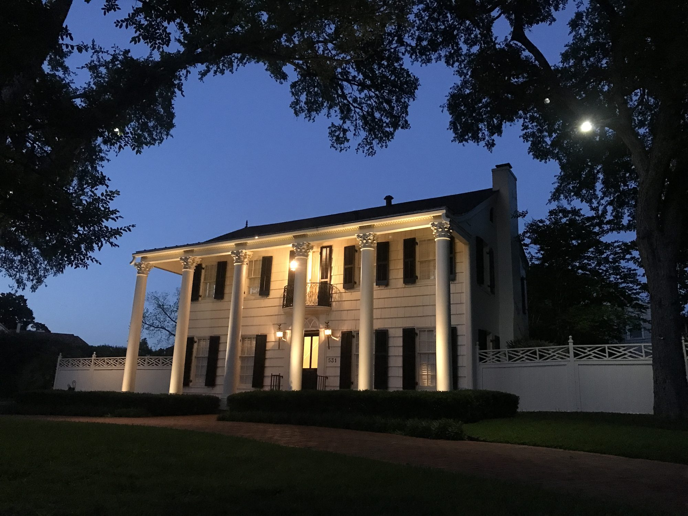
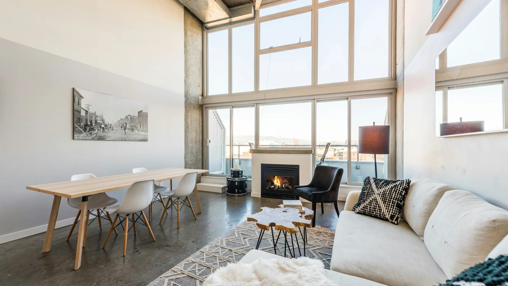

City center
Downtown San Antonio
High-rise condos and lofts a short walk from the River Walk.
Explore downtown
Buyer's Guide
Eight steps from pre-approval to the keys, written for the Texas contract, the option period and a title company closing.
A buyer's guide
Buying in Texas runs on a state-approved contract, a short option period and a closing at a title company. Robert LeBorne has walked buyers through it for more than thirty years, from first homes to foreclosures.
This guide takes the eight steps in order: what each one asks of you, and what Robert handles. If you have not been pre-approved yet, start with home financing, or browse every listing on the MLS while you read.

Step 1 of 8
Robert asks about budget, timing and what the house has to do for you: a first home, a move up or a rental. You leave with target neighborhoods, a price range and a financing plan.
Step 2 of 8
A pre-approval sets a real ceiling and tells sellers your offer will close. Robert connects you with lenders he trusts and, as a licensed loan originator, reads the numbers with you. More in the financing guide.
Step 3 of 8
You may not need 20 percent. FHA loans start at 3.5 percent down, eligible veterans can buy with no down payment on a VA loan, and Texas offers down payment help through the Texas Homebuyer Program. Budget for closing costs, taxes and insurance as well.
Step 4 of 8
Save searches on the home search and Robert schedules the showings, including bank-owned and HUD homes that can sell below market. Before you tour together, you sign a written buyer agreement that spells out his services and how he is paid.

Step 5 of 8
Texas uses contract forms approved by the Texas Real Estate Commission. Robert sets the price, terms and option period with you, and your earnest money and option fee go to the title company shortly after both sides sign.
Step 6 of 8
For the option fee, you get a set number of days to end the contract for any reason. That is when the inspections happen. If something turns up, Robert negotiates repairs or a credit, or you walk away with your earnest money returned.

Step 7 of 8
Your lender orders the appraisal, the title company searches the title and prepares the policy, and the survey confirms the boundaries. If the appraisal comes in low, Robert works through the options with you before a deadline passes.
Step 8 of 8
Texas closings happen at a title company: you sign, the loan funds and the keys are yours. Once you live there, file your homestead exemption with the Bexar Appraisal District; it lowers the value your property taxes are figured on.
He negotiated the price down, saving me $34,000!
Frank R., bought a home with Robert

Below-market homes
Foreclosures are not only for investors. Robert has worked them since the 1990s.
HUD lists its homes on the HUD Home Store, and owner-occupants get the first bidding window before investors. VA-owned and bank-owned homes follow their own rules and timelines. Robert prepares and submits the bids, and tells you plainly when a discount is real.
Where to start looking
City center
High-rise condos and lofts a short walk from the River Walk.
Explore downtown


On the market
Live from the MLS. Save a search and new matches come to your inbox.
<!-- IDX_ZONE: buyers-guide-san-antonio-new -->
Newest San Antonio listings (IDX Broker saved search 69441-1622 if IDX Broker stays). Builder places the widget here.
Questions
Usually 30 to 45 days from signed contract to closing, depending on financing and inspections. Cash purchases can close faster.
No. FHA loans start at 3.5 percent, eligible veterans can buy with no down payment on a VA loan, and Texas offers down payment help through the Texas Homebuyer Program.
A Texas contract term: for a fee paid to the seller, you get a set number of days to end the contract for any reason. It is when you do your inspections.
Yes. HUD gives owner-occupants an early bidding window, and many bank-owned and VA-owned homes suit first-time buyers. Robert explains each set of rules before you bid.
Before you tour homes together, you sign a written buyer agreement that spells out Robert's services and how he is paid. In many sales the seller agrees to cover some or all of it, and Robert explains your options first.
Yes, once the home is your primary residence. Filing with your county appraisal district lowers the taxable value of the home, which lowers the property tax bill.

Selling too?
Most move-up buyers have a house to sell first, and the order of the two closings decides how much stress you carry.
Robert can list your current home and coordinate both contracts, or price it with you first so you know your real budget.
Resources
Next step
A short conversation about budget and timing is enough to start. Robert will tell you what you can afford and what the next thirty days look like.